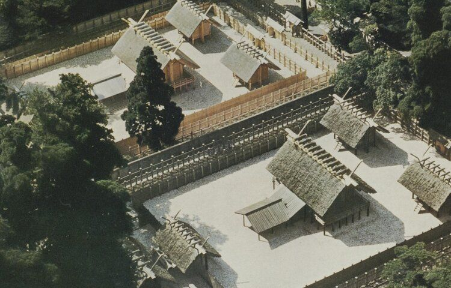
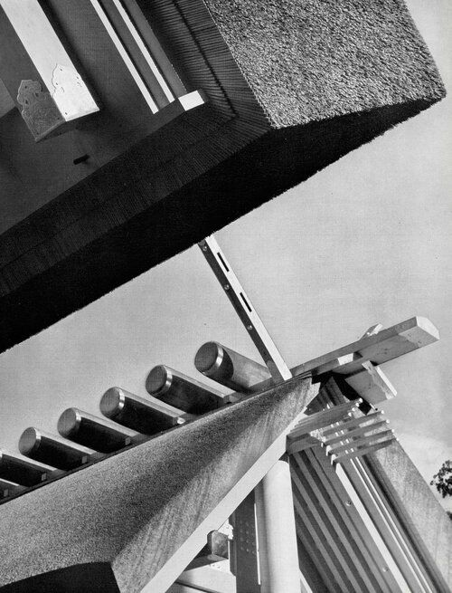

Credits
- Curator/Designer Roa Kim
- Research Kelvin Hu
- Acknowledgments FIVEIGHTEN
Contact: geriroa_kim@gsd.harvard.edu · +1 917-680-5082
ReAppearance begins with a simple claim: the appearance of architecture is not a residue of the past but a form of ongoing life. We work with what survives—fragments, scans, oral accounts, routine maintenance logs—and accept that visibility is unstable. Some things reappear by renewal, as at Ise where rebuilding is a pedagogy; some reappear by relocation, as with minka whose craft persists after displacement; some reappear only as documents, like the Sawin House whose image now exceeds its matter. The platform does not promise closure. It provides a public surface where these states of being can be read together without forcing them into one narrative of loss or one solution of restitution.
Preservation here is a practice of composition. We arrange sources that were never meant to align: a floor plan beside a street photograph, a conservator’s note beside a neighbor’s memory, a timber joint beside a demolition permit. Each juxtaposition changes the weight of what came before and after. To publish these relations in the open, as lightweight browser scenes, is to argue that accessibility is a structural part of care. Materials are licensed to circulate; metadata is kept legible; absences are named. The work is not to reconstruct an origin but to maintain a field of relations where study can happen and where new accounts can enter without asking permission.
ReAppearance treats replication as an ethic rather than an aesthetic effect. A copy that cites its sources can keep cultural techniques alive; a model that declares its gaps can invite counter-evidence; a record that can be forked can be stewarded by many. The platform is therefore minimal by design: portable files, clear credits, and public methods that others can adopt for their own sites. What we curate is not a definitive image of a building but a stable way to keep its appearances open—so that demolition does not equal erasure, ritual does not equal sameness, and relocation does not equal replacement. In this way, the archive behaves less like a vault and more like a commons.
Contact: geriroa_kim@gsd.harvard.edu · +1 917-680-5082
.gif)

